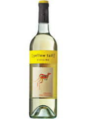

멜버튼 뉴코아 건강식품
호주 쇼핑리스트 부동의 1위, 건강기능식품을 사기 위해 호주 멜번 뉴코아 건강식품을 찾아보자. 프로폴리스, 폴리코사놀, 달맞이꽃 오일, 산양유, 초유, 마누카꿀, 초록잎홍합, 양태반크림 등 호주의 유명한 건강기능식품을 한자리에서 만나볼 수 있다.
골드코스트 퍼시픽페어
골드코스트 반일투어로 다녀온 퍼시픽페어. 골드코스트에서 가장 유명한 쇼핑몰답게, 쇼핑하기에 최적의 조건을 자랑한다. 명품 브랜드부터 유명 브랜드까지 입점되어 있는 상점만 300여 개의 달한다고. 카페, 레스토랑은 물론, 12개의 상영관을 갖추고 있어 영화 관람도 가능하다. 참고로, 호주 쇼핑리스트에 늘 이름을 올리는 판도라와 이솝도 퍼시픽페어에서 만나볼 수 있다. 판도라의 경우, 국내보다 다양한 물건을 저렴한 가격에 구입할 수 있다.
시드니 면세점

세 번째로 소개할 곳은 시드니 시티에 위치한 시드니 면세점이다. 에디터가 시드니 여행 중에 무려 세 번이나 방문해 가장 많은 물건을 구입한 곳이기도 하다. 총 3층으로 되어있으며, 호주 쇼핑리스트 검색 시 볼 수 있는 모든 것이 있다고 해도 과언이 아니다. 호주산 영양제(블랙모어스, 마더네스트, 스위스(Swisse) 등)부터 호주의 대표적인 차 브랜드 T2, 호주 국민 크림이라 불리는 포포크림, 양테반 세럼, 프로폴리스 스프레이, 캄포도마, 어그, 캥거루 벨트, 양모, 마그넷, 인형 등 각종 기념품까지 없는게 없다.